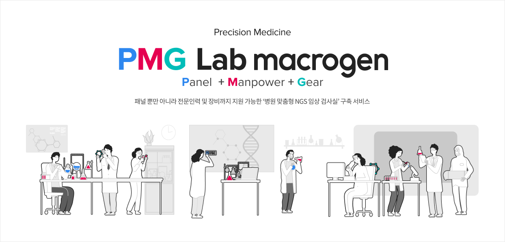

패널, 장비, 인력 등
NGS기반 유전자패널 검사실의 초기 구축을 지원합니다.
NGS(Next Generation Sequencing)기반 유전자패널 검사실을 구축하기 위해 많은 노력이 필요합니다.
마크로젠의 노하우를 통해 개발된 PMG Lab Business Model을 확인하세요. 각종 Clinical NGS Panels, Sequencing Platform, ManPower 등 다양한 서비스 옵션을 제공합니다.

SERVICE
임상진단사업 인증 현황
마크로젠은 인증받은 기술력으로 임상분석사업을 해오고 있습니다.
-
2013
- 2008년 ISO9001-최초인증
- 2011년 전사업 확대
-
2017
- 미국병리학회(CAP) 및
CLIA인증 획득 - 식약처 NGS 임상검사실
승인
- 미국병리학회(CAP) 및
-
2018
- 유전자검사 정확도 평가
참여(A등급) - 업계 최초 PIMS 인증 획득
(개인정보보호 관리체계)
- 유전자검사 정확도 평가
-
2019
- NGS 기반 체외진단시약
GMP 인정 획득 - 임상검체시험분석기관
(GCLP) 인정 획득
(NGS업계 최초)
- NGS 기반 체외진단시약
-
2020
- 미국병리학회(CAP) 및 CLIA
인증 획득(2회 연속) - 유전자검사 정확도평가 참여
(A등급) - ISO 13485 인증 획득
- 미국병리학회(CAP) 및 CLIA
마크로젠 암 진단 패널의 특징 및 경쟁력
세계 최고 수준의 유전체 기술력과 자체 보유 분석력을 바탕으로 높은 품질의 서비스를 제공합니다.
마크로젠
암 유전체 경쟁력
암 유전체 경쟁력

한국인 암
유전체 최적화
유전체 최적화
다양한 대형 프로젝트로 자체 확보한
한국인 정상 및 암 유전체 데이터베이스 사용
한국인 정상 및 암 유전체 데이터베이스 사용

쉽고 유용한 병원 맞춤형
결과지 제공
결과지 제공
이해하기 쉽게 구성된 기관 맞춤 결과지,
및 유용한 임상정보 제공
및 유용한 임상정보 제공

세계 최고 수준의
유전체 기술력
유전체 기술력
최고의 숙련된 전문인력 및 검증된
인증시설을 통한 높은 품질의 서비스 제공
인증시설을 통한 높은 품질의 서비스 제공
NGS기반 유전자 패널 검사실(PMG Lab) 구축 범위
NGS기반 유전자 패널 검사실 구축과 운영을 위한 상황별 맞춤 서비스를 제공합니다.
-
 패널 제공
패널 제공
- 성능 검증된 암 패널
- 모든 alteration 및 signature 한번에 분석
-
 수행 인력 파견
수행 인력 파견
- 다년간 NGS 수행 경험 보유한 선임급 연구원 파견
-
 BI 분석
BI 분석
- 병원 맞춤 리포트 제공
- 전문 BI 인력 1:1 매칭
- 정확한 분석 및 빠른 대응
-
 장비 투자
장비 투자
- NGS 실험에 필요한 모든 기기
- 분석 서버